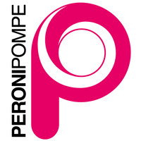
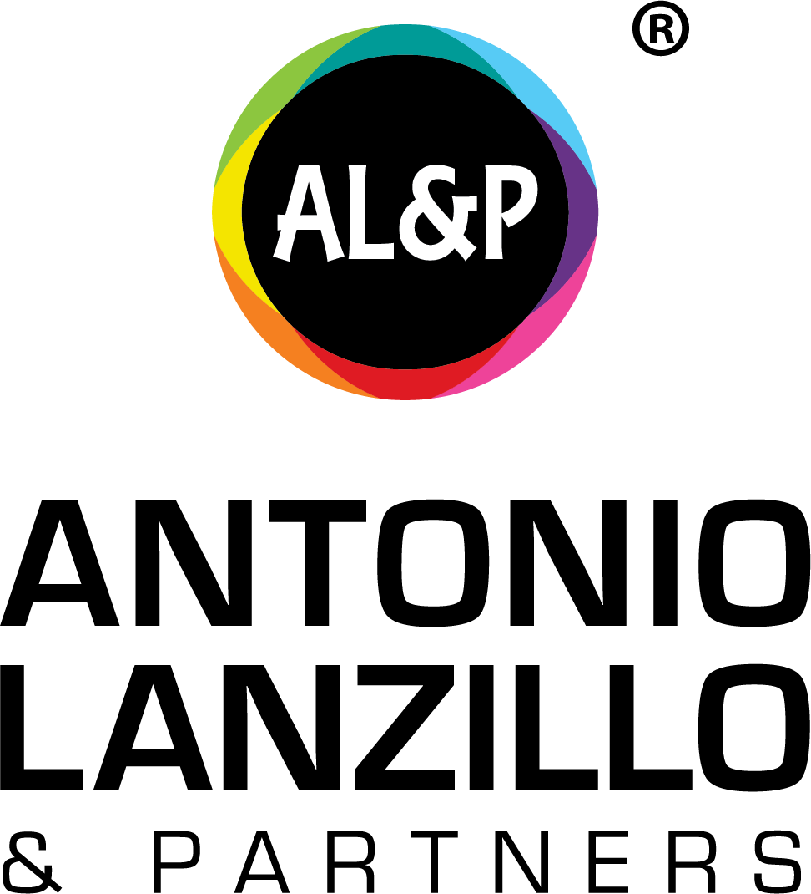
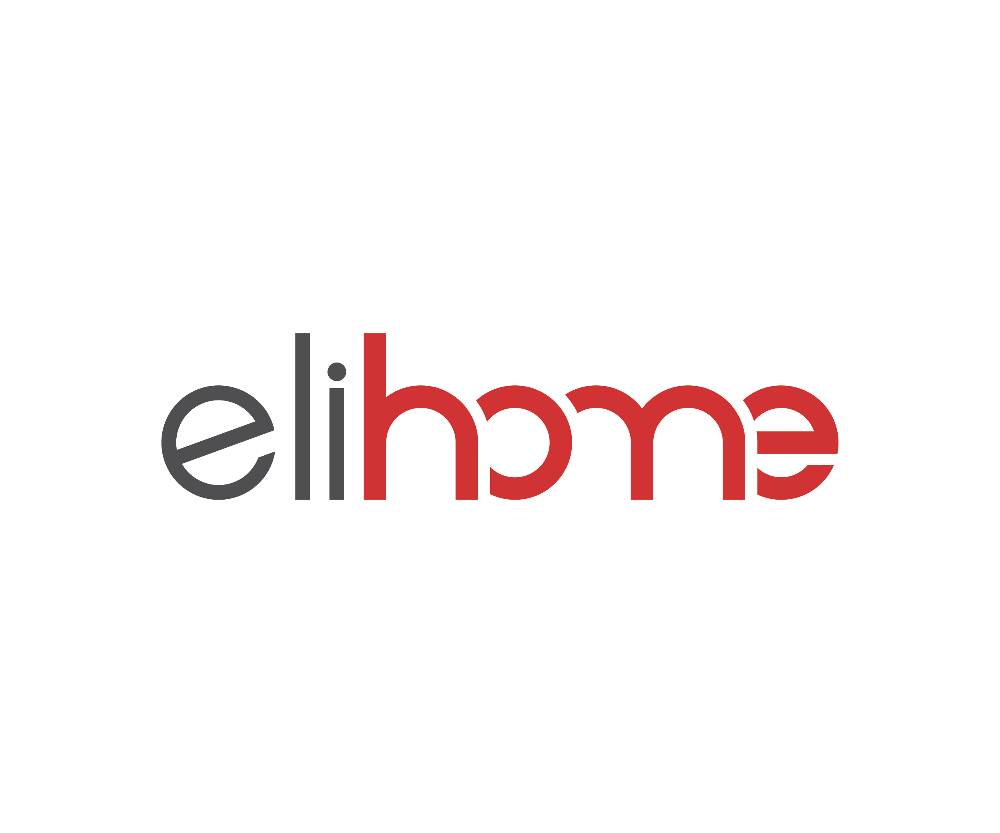

Hello, I’m Jinyang Zhou — a Product & Industrial Designer in Milan.
I connect product design, engineering,
and visualization to make complex
products clear and useful.
Discover Research & opportunity Develop Product systems & prototyping Communicate Visualization & technical clarity
Selected Work
Swipe & tap to compare
01 / 03
01
Engineering Clarity
Professional · Peroni Pompe
02
Product System
Academic · Politecnico di Milano
03
Consumer Story
Independent · CGI Launch Study
Professional · Peroni Pompe
From Engineering Complexity to Customer Clarity
A reusable visual system translating high-pressure pump engineering for FAT reviews, product pages, global sales, and exhibitions.
Role Product Visualization Designer
Contribution CAD → CGI, motion & technical diagrams
Evidence Official product pages · Visual assets for 4 international exhibitions
View Engineering Case →
Key Achievements
30+
Industrial Product Renderings
10+
Product Animations
5+
Customized Engineering Projects
4
International Trade Shows
2
Factory Acceptance Tests (FAT)
Cross-functional
Collaboration with Engineering, Marketing & International Sales
Capabilities
Swipe to explore
01 / 03
Professional Recommendations
LinkedIn recommendation

“She stands out for her curiosity, willingness to take on new challenges, and ability to adapt with enthusiasm and commitment. She is proactive, reliable, and a valuable asset to the entire team.”
Michela Fernicola
Group Marketing Manager · Peroni Pompe / Jetech International
View on LinkedIn ↗
LinkedIn recommendation

“Creative, passionate, and curious—always finding original and effective solutions.”
Antonio Lanzillo
Founder & Chief Designer · Direct supervisor
View on LinkedIn ↗
Verified written endorsement

“Strong in research synthesis, structured analysis, and visual presentation—turning information into strategic design implications.”
Chen Zhang
EU Regional Manager · Elihome
Download signed PDF ↓
Let’s make complex products clear, useful, and compelling.